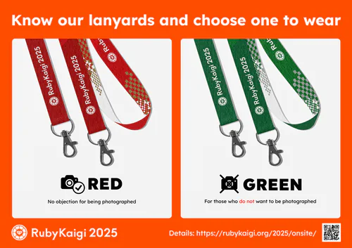

Onsite Information
Door Open and Check-in
Door open: The conference venue opens at 9:00 AM on Day 1 (Wed, 16 Apr), and at 9:30 AM on the following days.
Pre-checkin: Pre-checkin is available at the venue, during 4:00 PM - 7:00 PM on Day 0 (Tue, 15 Apr). We recommend attendees to visit the venue during that time to receive your lanyard early and skip the line on Day 1.
Chat (Discord)
RubyKaigi has an official Discord server to enhance communication among attendees.
Join our community from: https://rubykaigi.org/go/discord
Each session track has a dedicated chat channel. Corresponding session hall has a subscreen showing the live caption of the ongoing talk and the chat log from Discord.
English Interpretation
RubyKaigi provides Japanese-to-English live interpretation for all Japanese-spoken sessions.
Receivers are distributed to attendees at the main hall foyer on the ground floor. Attendees can bring a receiver to any session hall during the day, but receivers must be returned when leaving the conference venue.
Note: There's no English-to-Japanese live interpretation.
Lunch Options
We encourage all attendees to find restaurants nearby the conference venue - enjoy local foods!
Also, we have a limited number of bento boxes and complimentary food trucks. However, since there's no enough space to have meals in the conference venue, this should be considered a last resort option.
Social Events
Find social events from Events page. Note that an official party ticket is sold separately.
If you're registered to the Official Party, remember to visit the reception desk anytime after the keynote on Day 1 for pre-checkin.
Disposing Trash
This year, the venue enforces stricter rule for disposing trash.
{" "}
We hired a different disposal company from Day 3, thus the previous rules are no longer valid and well relaxed. Use the following bins:
- Burnables
- Plastic bottles
- Cans and glass bottles
- Plastics
Taking Photos
We know that Rubyists tend to enjoy taking photos during the conference, and so do we. But we also know there are people who don't want to be photographed. Therefore, we implement an indicator for those who don't want to be photographed during the conference.
In RubyKaigi 2025, the indicator is implemented using lanyards attached to the conference badge as shown in the diagram above.
- Red lanyards: For those who have no objection to be photographed
- Green lanyards: For those who do not want to be photographed
We ask all attendees to respect this do-not-photograph-me sign: Avoid taking photos including those who are wearing the green lanyard.
Photographing or asking for photos, people with such intention forcefully (not accidentially) may be considered a violation against our Code of Conduct.
Also, professional photographers engage in the conference on behalf of the RubyKaigi organizing team ("RubyKaigi photographers"). RubyKaigi may publish photos taken by the RubyKaigi photographers, during or after the conference; Published photos of large groups may accidentally contain people with green lanyards, despite we do our best not to publish photos with those people as much as possible. Please let us know at 2025@rubykaigi.org if this applies to you or you found such case.
Wi-Fi
Wi-Fi is available throughout the conference venue at best-effort. Please turn off personal hotspots to keep wireless interference to minimum in the venue.
Network name:
RubyKaigi 2025
Password:
matz-yama
Acknowledgements:
Built and operated by RubyKaigi NOC team with members from KMC.
Contributors:
Internet connectivity and Volunteers by KMC, Interconnection circuits by Cookpad.
Privacy: RubyKaigi NOC team may collect minimum traffic log for operation, diagnostic and statistical purpose. RubyKaigi NOC team may publish traffic statistics in anonymized form.
Feedback: Tweet with #rubykaigiNOC, or use Discord #2025-chat or #noc channel to give us a feedback and report.
Public Dashboard:
https://grafana.rubykaigi.net/
Public Code Repository:
https://github.com/ruby-no-kai/rubykaigi-net
Experiments
RubyKaigi 2025 Wi-Fi runs the following experiments; Enjoy!
- v6mostly network (RFC 6052, RFC 7915, RFC 8781, RFC 8925). Use 'Legacy' SSID to disable this functionality.
- DNS over QUIC
We continue to enable these past experiments as well, but promoted to stable features:
- DNS over HTTPS/TLS and autodiscovery using RFC 9462
Off-session areas
- 🎫 Reception Desk: At the 1st floor, right front of the entrance
- 🏘️ Sponsor Booths (Expo): At the 1st floor, behind the reception desk
- ⚡ Hack Space with power outlets: At the 2nd floor (in the middle of #rubykaigiC), sponsored by SmartBank, Inc..
- ☕ Coffee and Mikan Juice: are served at the 1st floor, sponsored by ANDPAD Inc.
- 🍊 Snacks and Fruits: are served at the 1st floor, sponsored by vivid garden Inc.
- 📚 Bookstore: @.bookstore is available at the 2nd floor; opposite of #rubykaigiC and Hack Space. There are several events planned at the store.
Notice for attendees visiting by car
While we recommend to use public transportation, if you need to visit the venue by car, please note the following:
- Use the parking lot of the conference venue: https://www.kenbun.jp/access/
- Do not park in other venues or nearby buildings.